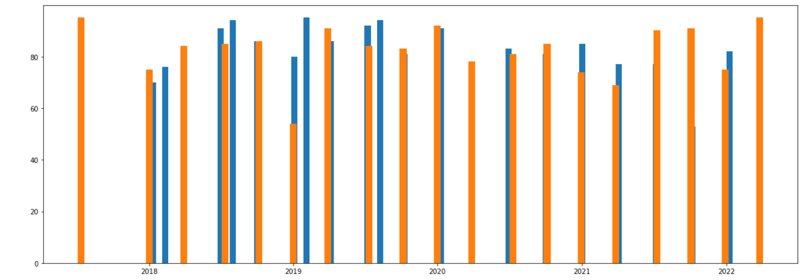
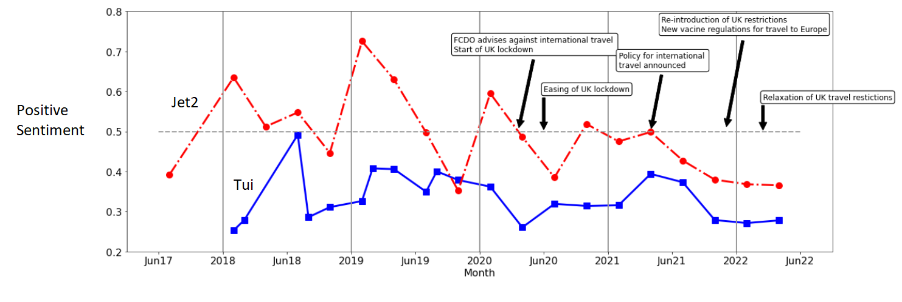
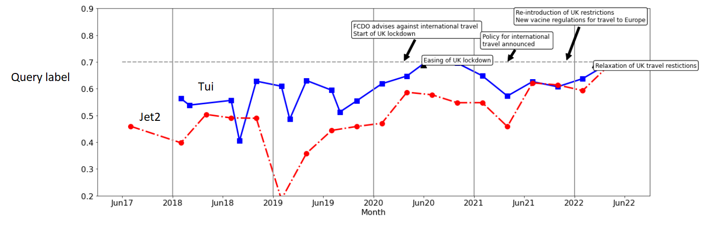
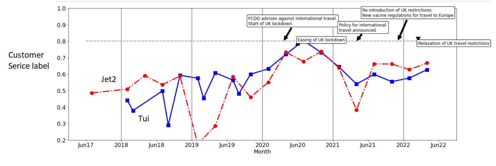
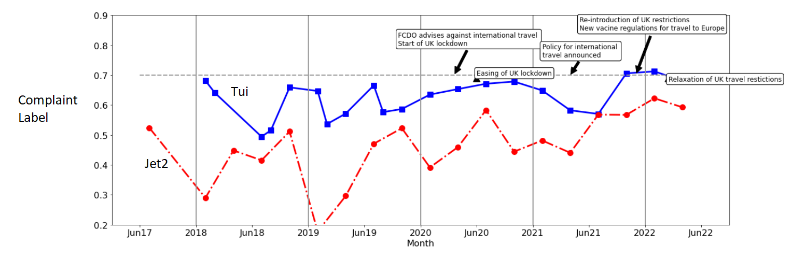

Natural Language Processing of Travel Tweets
NLP of tweets of travel companies during COVID

Introduction
Travel analysis of twitter feeds of UK travel companies TUI and Jet2 twitter accounts before and during the COVID pandemic.
- Twitter data is obtained from the twitter API using tweepy.
- NLP analysis is done using a zero-shot method from transformers.
- Analyis of NLP data is kept at a basic level using pandas and matplotlib
Twitter Data
Tweets were obtained using the twitter API and tweepy more details on twitter and API here- tweepy.
I decided to keep the query simple and just use tweets containing the handle of TUI and Jet2’s UK twitter accounts, as shown below. This was mainly because of the API limitation meant experimenting on the best query took away from getting data.
query='@tuiuk' or query='@jet2tweets'
I also decided to get tweets from a 3 day period, at first the start of a month and later in the middle. The tweets were focussed on dates around January 2020 (the start of the pandemic), with data obtained up to ~2 years before this and just over 2 years after this to the present (April 2022). And Use the search_full_archive call from twitter api. Broadly the call is as shown below.
from datetime import date
from datetime import timedelta
start_time = date.fromisoformat('2020-02-01') end_time = start_time + timedelta(3)
outa=api.search_full_archive(label="mytwitterlabel", query=query,toDate=toDate,fromDate=fromDate)
This leads to around 1500 tweets per firm at the time of analysis, due to twitter API call being limited.

The number of tweets for Tui and Jet2 after removing ‘duplicate’ tweets
Natural Language Processing (NLP)
The most ‘reliable’ way to analyse text data is to do a two step process:
- creating a language model for the data
- using this language model with labelled data to classify different texts
This method is shown here https://www.kaggle.com/code/thomassimm/imdb-sentiment-analysis for sentiment analysis (i.e. are reviews positive or negative) of IMDB data. But the labels need not be positive or negative but can be more nuanced.
However, for this twitter data there is no labelled data. I could label the data myself but will first try an alternative approach-> the zero shot learning method. The advantage is no labelled data is needed nor any prior training. But the accuracy will be reduced without any training as shown below.

Another advantage of the method is that it can be used to classify text data by broad labels based on the language model as shown by the example from the link below:
sentence = 'Who are you voting for in 2020?'
labels = ['business', 'art & culture', 'politics']
And the similarity for each label (high the better):
label: politics similarity: 0.21561521291732788
label: business similarity: 0.004524140153080225
label: art & culture similarity: -0.027396833524107933
Labels for travel data
At this point in analysis the goals are broad, I mainly want to know if I can understand how customers were reacting to the travel restriction changes being imposed on them and how this differed for the two travel companies. So what may be things we would want to classify from the tweets:
- How happy/unhappy are the customers?
- Is there a change in the number of what would be classed as complaints?
- Can sentiments be separated by what is the cause? e.g. customer service, cancellations, company policies
- (similar to above) What do the tweets refer to?
- Can we remove customer tweets from spam/promotional details/business changes etc?
After a bit of iterating I decided on the following labels (see https://www.kaggle.com/code/thomassimm/travel-tweets-nlp/ for trying out different labels).
candidate_labels=['query','complaint', 'holiday','hotel', 'flight','flight cancellation','flight delay', 'website or app problem','customer service', 'travel regulations','price', 'holiday cancellation']
Let us examine how the labels work for different tweets (picked randomly but avoiding tweets with similarity):
A) Hi there, do you know the transfer time? I couldn’t see it on the website. Thanks query 0.98
complaint 0.73
holiday 0.00
hotel 0.62
flight 0.24
flight cancellation 0.01
flight delay 0.15
website or app problem 0.89
customer service 0.97
travel regulations 0.26
price 0.00
holiday cancellation 0.00
B) Worst ever sent details of complaint Florida villa including memory stick with photos sent in never heard a thing don’t bother they just ignore youquery 0.72
complaint 0.98
holiday 0.73
hotel 0.03
flight 0.00
flight cancellation 0.00
flight delay 0.00
website or app problem 0.00
customer service 0.82
travel regulations 0.06
price 0.09
holiday cancellation 0.13
C) hi I’ve been trying to book a holiday for a few days on my pc or via the mobile app but when I try to check out I get this error messagequery 0.73
complaint 0.97
holiday 0.94
hotel 0.47
flight 0.17
flight cancellation 0.00
flight delay 0.00
website or app problem 1.00
customer service 0.70
travel regulations 0.22
price 0.07
holiday cancellation 0.94
D) how do I amend dates on my holiday. Iv tried ringing customer service but was given wrong number to ring. Thanksquery 0.91
complaint 0.93
holiday 0.99
hotel 0.17
flight 0.11
flight cancellation 0.02
flight delay 0.02
website or app problem 0.00
customer service 0.67
travel regulations 0.57
price 0.00
holiday cancellation 0.38
E) Maybe not quite neighbouring - Trinidad and Tobago 😁😁😂query 0.37
complaint 0.87
holiday 0.03
hotel 0.03
flight 0.03
flight cancellation 0.01
flight delay 0.01
website or app problem 0.02
customer service 0.06
travel regulations 0.08
price 0.04
holiday cancellation 0.06
Some quick comments:
- Overall the labels make sense to the particular tweets.
- Complaint seems to be high for all even when they are clearly not complaints (D and E). Although, obvious complaints have higher values. Maybe combine with sentiment analysis?
- Website and app issues well picked up, preseumably as they use the words website or app
- The one with no relevance to customer service (E) scores low for query and customer service, so maybe the metric can help to distinguish these.
- Highest value for flight was for A even though flight not explicitly mentioned
Lots of positives from this small selection. But to get a good idea of classification may take some more modication in terms of what to use and what values they give for different things. Perhaps this can be done as a neural network after some sort of labelling?
Analysis of Labelled data
A brief analysis of the NLP results is given here https://www.kaggle.com/code/thomassimm/travel-tweets-analyseresults and presented below.
The most obvious thing to check first is the change in the sentiment of tweets. The figure below does this by taking the average of the positive sentiment for each time period.
Sentiment

Some initial comments:
- Jet2 gets more positive tweets than Tui
- The data may be noisy. The changes before the pandemic are noticeably large and it is not obvious if these are real trends or just noise. More digging would need to be done to establish what the changes are before COVID before the change during COVID could be assessed.
- The overall sentiment appears to be at a low in early 2022, the easing of restrictions may be suggesting a more positive sentiment in the future.
- Since this is an average of a random selection of tweets. A change in the nature of the tweets would have a big influence on the results.
Customer Service Queries
Given the last of the comments (the nature of the tweets), we may wish to separate tweets based on some overall criteria- e.g. review (inclusing complaint), query and other (including none customer queries, general comments, spam etc). Or remove the last of these by some other criteria such as ‘customer service’ and/or ‘query’ more than a certain amount.
 
Based on the above figures the percentage of tweets that are labelled ‘query’ or ‘customer service’ increase sharply during the pandemic. This would make sense given the confusion around the situation and the questions that customers will have around COVID regulations and company policies in dealing with these changes.
Complaints
Returning to the overall sentiment figure above, can a classification of tweets based on whether they are a complaint help with the changes?
As shown in the figure below the complaint classification shows a clearer increase during the COVID period. Perhaps this offers a better way instead of the sentiment analysis to understand the nature of the tweets, but more analysis would be required.
The maximum values for this metric for both cmpanies at the end of 2021 / start of 2022, are worth exploring in more detail
